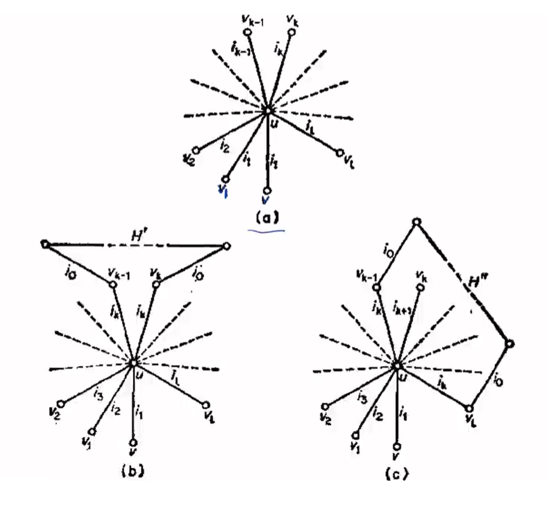

Vizing 定理学习笔记
本来想一直咕咕咕的，结果没想到最近比赛用到了，这下不能咕了。
定义
对于一个边染色，如果一个点有一条 $c$ 颜色的边，我们称 $c$ 在这个点上表现。
简单图：无重边和自环的无向图。（事实上有自环不影响 Vizing 定理的正确性，自环性质太好了，直接染上这个点没有表现的颜色就行了）
一个点的度数为 $d(x)$ ，其中 $\Delta = \max\limits_{x\in V}d(x)$ ，即最大度数。
对于一个边染色 $c$ ，一个点的表现颜色数为 $c(x)$ ，边的颜色为 $c(x,y)$ ，称一个边染色合法当且仅当对于每个点：$d(x)=c(x)$ ，即一个颜色不会在一个点重复出现两次，同时称此时的颜色数是合法的。
称一个染色方案 $c^{\prime}$ 为另一个染色方案 $c$ 的优化，当且仅当 ：$\forall c^{\prime}_{x}\ge c_{x}$ ，且存在 $x$ 是 $>$ 号。
一个染色方案称为最优当且仅当其不能被优化，显然一个颜色数合法当且仅当其的其中一个最优染色方案合法。
称：$\chi$ 为最小的合法颜色数，显然的有：$\chi\ge \Delta$ 。
证明
引理 1 ：对于一个不是奇圈的连通图，存在一种两种颜色边染色（不一定合法）满足 ：$\forall x\in V,d(x)\ge 2 : c(x)\ge 2$
证明
假设图是一个欧拉图，即所有点度数为偶数，那么如果度数都为 $2$ ，就是一个环，显然必须得是偶环。
否则存在度数 $\ge 4$ 的点 $x$ ，以该点为起点做欧拉回路 ：$x-e_1-x_{1}-e_{2}-…-x$ ，那么每个点都一定在中间出现过一次，所以 $\forall x\in V, c(x)\ge 2$ 。（奇数和偶数的边为不同的颜色）
假设不是欧拉图，此时不可能是奇环，直接新建一个点 $t$ ，把所有奇点连向他，构成一个欧拉图，然后以 $t$ 为起点跑回路，显然这符合要求。
引理 2 ：一个方案最优的必要条件：若 $i_1$ 在 $x$ 处不表现，$i_2$ 表现两次，则 $E_{i_1}\cup E_{i_2}$ 中 $x$ 所在的连通块是个奇环。
证明
显然，不是个奇环就存在两种颜色的染色，根据那种染色重新染上 $i_1,i_2$ ，则一定优化了，证毕。
本来想用增广路证明的，但是发现只能证明从 $x$ 出发的 $i_2-i_1-…$ 的增广路一定是个奇环，离证明连通块是个奇环还有点距离，遂放弃。
Vizing 定理：对于简单图，$\Delta \le \chi \le \Delta + 1$
证明
反证法，假设 $\chi > \Delta+1$
我们假设一种 $\Delta + 1$ 的最优染色方案。
存在 $u:c(u)<d(u)$ ，那么 $i_{0}$ 在 $x$ 上不表现，$i_{1}$ 表现两次，假设 $c(v_{1},u)=i_1$ ，$i_2$ 不在 $v_{1}$ 上表现，那么一定存在 $v_{2}$ ：$c(v_{2},u)=i_2$ ，否则能优化。
优化：$i_{l+1}$ 不在 $u$ 表示，那么给 $(u,v_{i})$ 染色 $i_{i+1}$ 色就可以优化了。
一直这样下去，直到：$\exist k:i_{k}=i_{l+1}$ （显然 $v$ 序列是不重复的），其中显然 $l\ge 2,k<l$，也就是下面的 $a$ 图。

上面的图片截自参考资料中的视频，来源是 bondy 图论，很老的一个教材。
优化染色，若 $k>1$ ，那么：
给 $\forall 1\le i <k,c^{\prime}(u,v_{i})=i_{i+1}$ ，其余与 $c$ 一样。
和上面的 $b$ 图一样，这样 $E_{i_{0}}\cup E_{i_{k}}$ 中 $u$ 所在的连通块是一个奇环。
然后再基于 $c^{\prime}$ 构造一个新的染色：$\forall k\le i\le l,c^{\prime\prime}(u,v_{i})=i_{l+1}$ ，也就是上面的 $c$ 图，那么此时原来的奇环中，只有 $(u,v_{k})$ 消失了，则剩下的一定不是奇环，相对于 $c^{\prime\prime}$ 可以优化，可以验证，$c^{\prime\prime}$ 不劣于 $c$ ，所以这就构造了一个优化的方案，矛盾。
如果 $k=1$ 那么存在 $v≠v_{1}:c(u,v)=i_{1}$ ，则 $v,v_{1}$ 在奇环中，$\forall 1\le i\le l,c^{\prime}(u,v_{i})=i_{i+1}$ ，那么类似的，奇环断成链，可以优化，矛盾，证毕。
那么重边会导致什么问题呢？可能会导致 $v$ 序列有重复，注意到我们上面重新染色的时候，$c^{\prime}(u,v_{i})=i_{i+1}$ ，这个染色严格不劣的原因是 $i_{i+1}$ 在 $v_{i}$ 上不表现，但是如果 $v$ 序列有重复，就可能把 $v_{i}$ 的两个颜色染成 $i_{i+1}$ ，这样就可能导致更劣的结果，导致我们并没有得到更优的方案，证明不再成立。
一个简单的例子：三角形，但每条边重复两次，手模一下就知道我说的是什么意思了。
补充结论
偶图一定是：$\chi = \Delta$ 。（证明：偶图没有奇环）
非简单图中，设 $u$ 是一条边重复次数的最大值，那么 $\chi\le \Delta + u$ ，我不会证明，这里放个讲解证明的视频：https://www.bilibili.com/video/BV1984y1V7Rx/?vd_source=5dd17c0f68b735f1a16d0353c08bcc7a 。
参考文献
https://www.bilibili.com/video/BV1984y1V7Rx/?vd_source=5dd17c0f68b735f1a16d0353c08bcc7a
这下 B 站真是学习网站了。